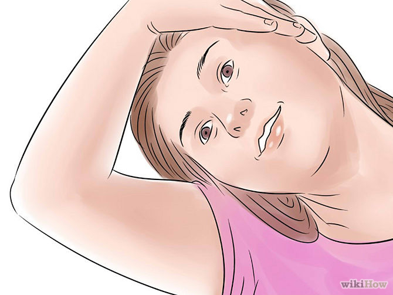
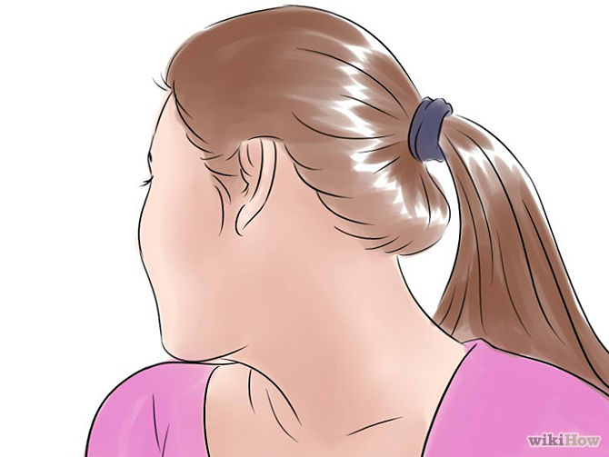
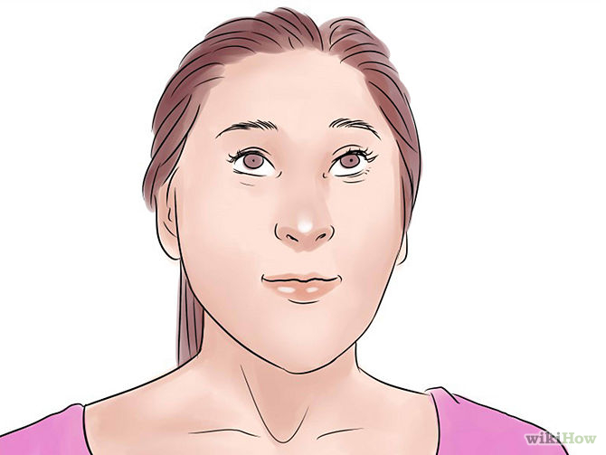
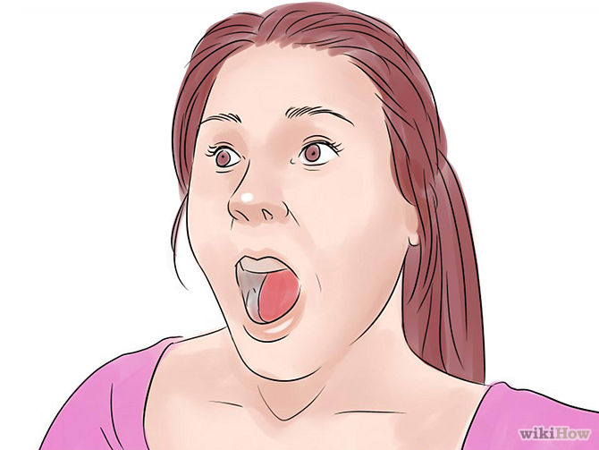
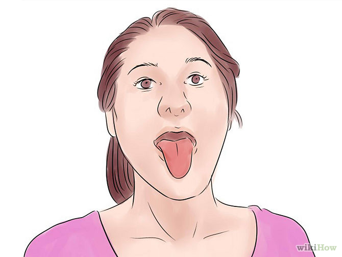
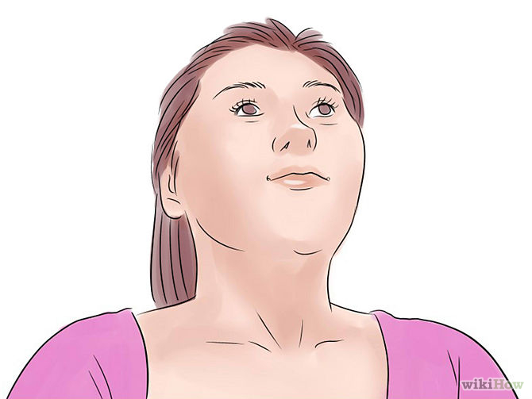
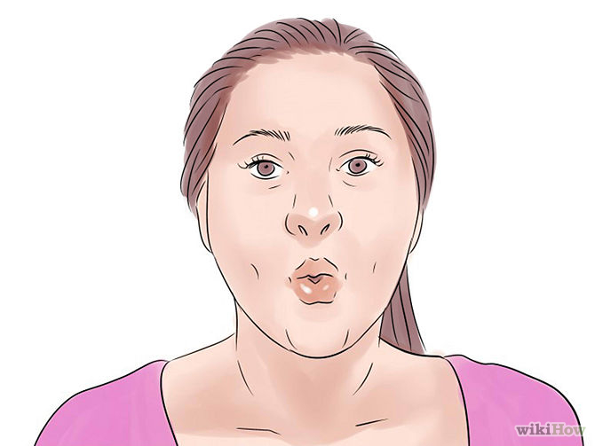
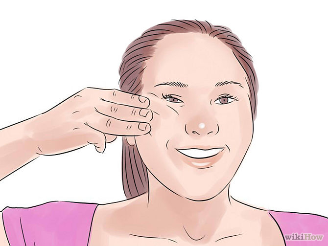

Find a space in your house where you can be alone and comfortable. Like many isometric exercises, facial exercises can look and feel somewhat awkward in the beginning. Sit upright in a chair, taking care to have good posture.

Stretch your neck before beginning your facial exercises.All these movements should be done slowly, while breathing deeply. Tilt your head down and raise it back up a few times.
Slowly move your chin from one shoulder blade across your chest to the other shoulder blade.
Look over each shoulder for a count of 5 seconds. Repeat this twice.
Tilt your head to the right, as if you want to rest your head on your shoulder. Hold for 10 seconds. Repeat on the left side. Return to a neutral neck position to begin your facial routine.
Part 2 of 5: Eye exercises

Look to your right side, while keeping your face pointing forward.Hold for 5 seconds. Move your eyes to your left side for 5 seconds.
Look up for 5 seconds. Look down for 5 seconds. Look diagonally for 5 seconds in each direction. Now, turn your head to the left and look in corresponding directions. Repeat exercise 2 to 10 times for both sides.
This eye workout can reduce drooping eyelids and it can also refresh your eyes if you work on a computer or watch television for long periods of time. You can also do this exercise with your eyes closed.

Raise your eyebrows and hold them for 5 seconds. Open your eyes as wide as you can and allow your mouth to frown. Repeat five times.

Open your eyes wide, in a surprised look.Try not to raise your eyebrows. Repeat 5 times.
Part 3 of 5: Mouth exercises

Stick your tongue out as far as it will go. Hold this pose for 60 seconds.Hold this pose for 60 seconds.

Look up at the ceiling.Pucker your mouth as if you are going to kiss something. Hold for 5 seconds and repeat 5 times.
Stick out your tongue five times while looking up at the ceiling. This set will stretch and strengthen your neck muscles. Return your head to a neutral position to continue the exercises.
Do the O mouth.
Drop your jaw to open your mouth.
Make a small "O" with your lips.
Keeping your jaw dropped, make your lips wide, as if you're trying to smile.
Repeat small "O", big "O" about 10 times.
Do the smiling Buddha.
Fold your lips into your mouth so that they are not visible.
Raise the corners of your mouth into a smile.
Repeat 10 to 12 times.
Part 4 of 5: Breathing exercises

Do deep breathing exercises.Each time you breathe out, pucker your lips and blow out, as if you are blowing a kiss. Do this for 30 seconds to one minute.
Part 5 of 5: Cheek exercises

Place three fingers on the top of your right cheekbone.Press down slightly. Smile to raise your cheekbone as much as possible.
Do the same to your left cheekbone. Repeat 3 times, holding for 5 seconds.